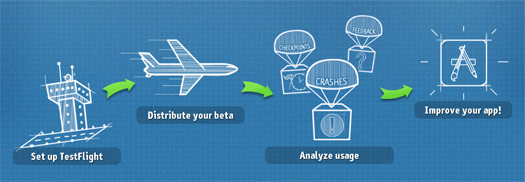

Christina Moulton, Teak Mobile Inc.
Session 1: Design Patterns & Obj-C Features, Apple's Tools, SDK & Core Classes
Exercise 1: Interface Builder, IBOutlets & IBActions
Lunch
Session 2: iOS App Ecosystem, 3rd Party Tools & Testing, Key Resources
Exercise 2: JSON REST APIs, Storyboards & Tableviews
Session 3: Code Signing, App Store Submission, What Should Be a Native App vs. Web App
iOS App Ecosystem
3rd Party Tools & Testing
Key Resources
Devices, capabilities, resolutions
SDKs
Supporting older devices
Developer Portal
App Store & iTunes Connect
Hardware by capabilities iOS Device Compatibility (Apple)
If not key feature, check for presence & degrade gracefully (e.g., select photo vs. take photo)
| SDK | iPhone | iPad | iPod Touch |
|---|---|---|---|
| 7 | 4, 4S, 5, 5C, 5S (June 2010) | 2nd, 3rd, 4th (March 2011) | 5th (Sept 2012) |
| 6.1.3 | 3GS (June 2009) | 4th (Sept 2010) | |
| 5.1.1 | 1st (April 2010) | 3rd (Sept 2009) | |
| 4.2.1 | 3G (July 2008) | 2nd (Sept 2008) | |
| 3.1.3 | 1st (June 2007) | 1st (Sept 2007) |
Check headers / docs or Deploymate
Weak link frameworks (mark as optional)
Check for support at run time
NSString *osVersion = [[UIDevice currentDevice] systemVersion];if ([AClass respondsToSelector:@selector(aMethod)]) {
[AClass aMethod];
} else {
//Fail gracefully
}
// iOS 4.2+
if ([AClass class]) {
// Safe to use AClass
}
Links to:
Guidelines, checklists, marketing resources
SDK & Xcode downloads (pre-release)
Documentation, videos & demo code
Human Interface Guidelines (HIG)
Beta Testing & Crash Reporting: TestFlight, HockeyApp, Crashlytics
In-App Analytics: Flurry
Sales Analytics: App Annie, Distimo
3rd Party Framework Demo
iOS 3rd Party Tools: BaaS
iOS 3rd Party Libraries & Dependency Management: CocoaPods, AFNetworking, RESTKit
Symbolication (.dSYM): Keep your beta & App Store builds!
Download
Add framework
Import header
Integrate
Customize
Parse, Kinvey, StackMob, Appcelerator Cloud
Provide server-based functionality:
Database shared between users
File storage
Push notifications
Custom server code
Dependency Management: CocoaPods
RESTful Web Service: RESTKit
Networking Framework: AFNetworking
Custom UI Controls: Cocoa Controls
Lots of Frameworks: iOS Frameworks
Install & import RESTKit
Tapping on the button should change the label text (label.text) to display the number of times the button has been pressed
([NSString stringWithFormat:@"Taps: %d", self.tapCount])
Christina Moulton, Teak Mobile Inc.
@ChristinaMltn, christina@teakmobile.com
Device Mock Ups: MockUPhone